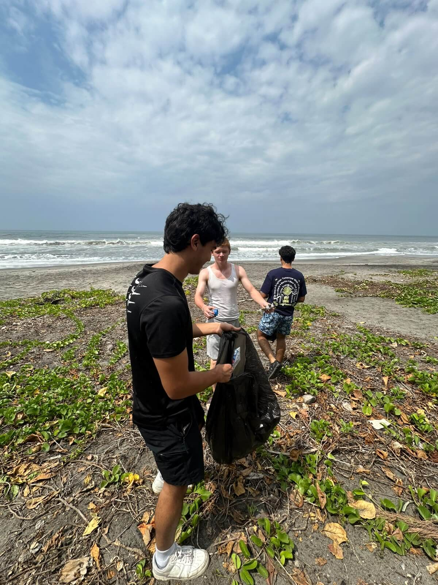
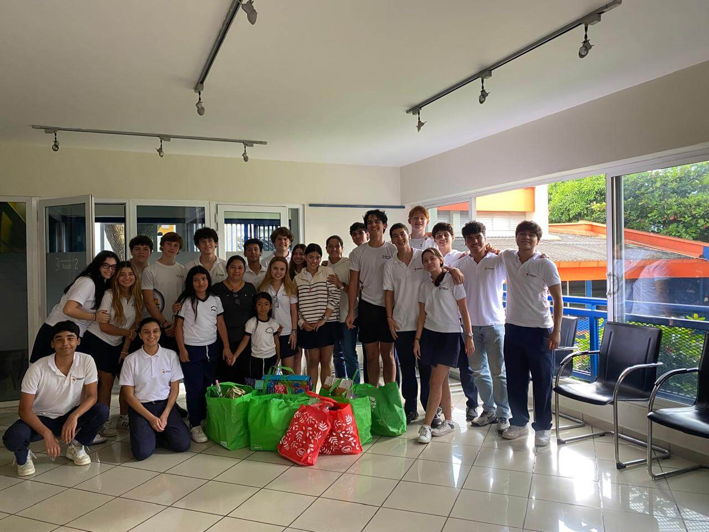
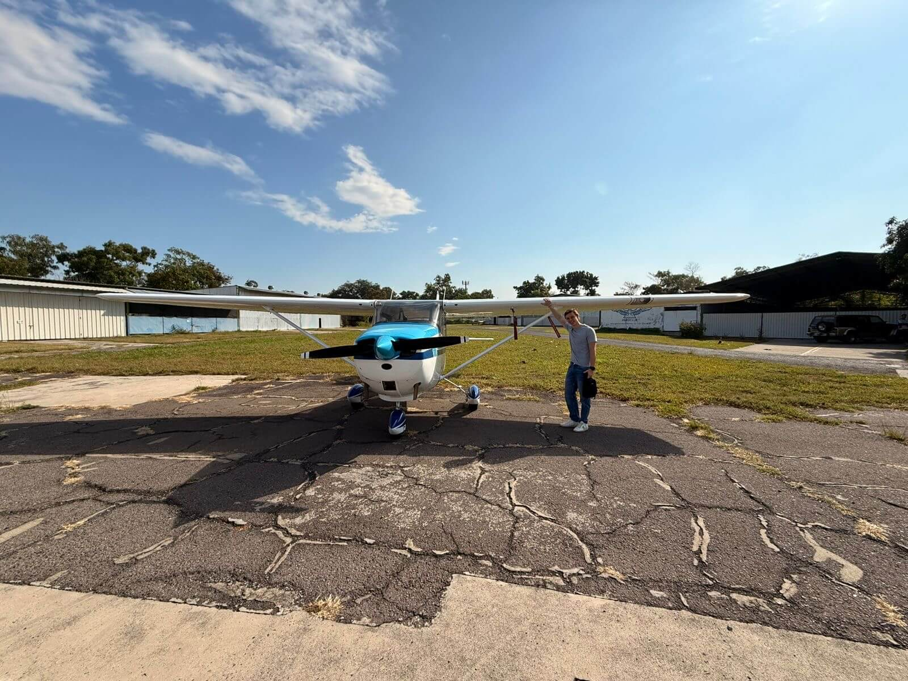

VIA University College
Software Technology Engineering
Horsens, Denmark (2026 - Present)
Software Technology Engineering
Horsens, Denmark (2026 - Present)
High School Diploma
San Salvador, El Salvador (Graduated 2026)
Summer Intern
Assisted in daily architectural operations and acquired basic proficiency in AutoCAD for project drafting and design structure.
100 Social Hours
Participated in multiple weekend initiatives dedicated to cleaning and preserving the beaches of El Salvador.

Volunteer
Collaborated with a local foundation to visit nursing homes, providing assistance, companionship, and support to the elderly.

In Progress
Completed 35 flight hours towards official private pilot certification.
